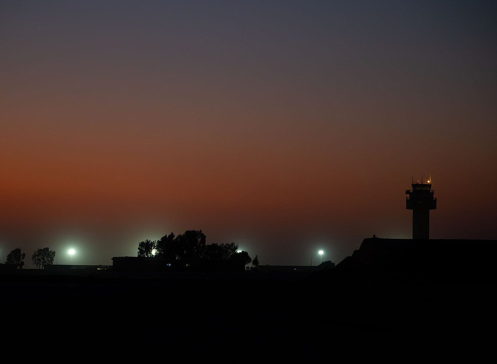
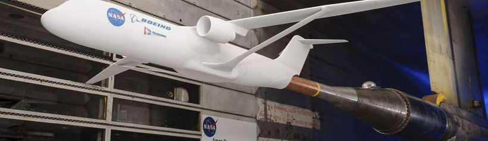
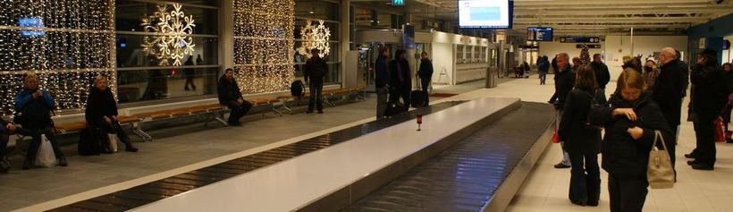
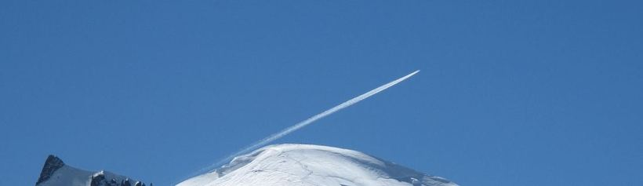
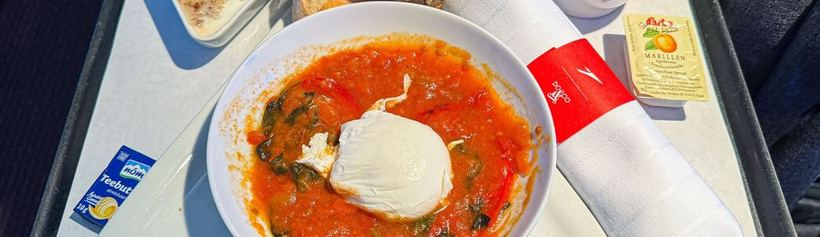
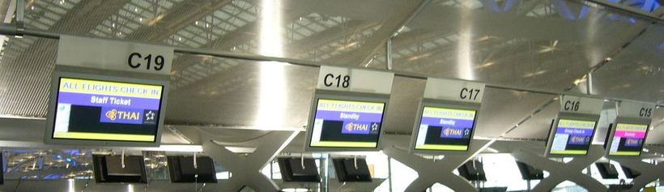
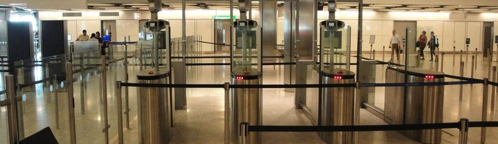
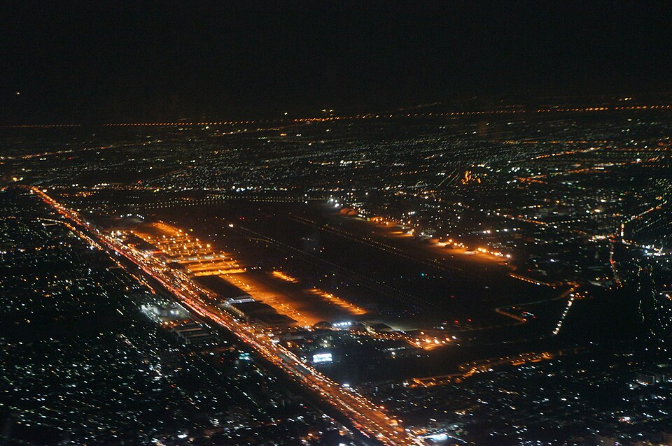

Havacılıkta dokuz AI modeli
Gecikmeyi tahmin eden, çatışmaları işaretleyen, uçak boyutlandıran Streamlit panosu; her model görmediği veride test edilir.
- Modeller
- Dokuz, gecikmeden binişe
- Açık veri
- 6 set, NASA'dan OpenSky'a
- Testler
- pytest, yaklaşık iki dakika
- Çalışma
- İnternetsiz
Bütün modeller tek ekranda
Her model ilk açılışta eğitilir ve kendi sayfasında açılır. Burada hava trafik modeli Türkiye üzerindeki 250 gerçek uçağı önümüzdeki 20 dakika için denetliyor.
Dokuz modelin hepsini gör- TFVerimli trafik akışıGecikme riski · AUC 0,81Hazır01
- SMEmniyet ve bakımMotor ömrü · NASA C-MAPSSHazır02
- ATHava trafik yönetimi%10 üstü 13 çift · 20 dkAçık03
- ADUçak tasarımı21 yolcu uçağı · MTOW hatası %6Bekliyor04
- BGBagaj yönetimiKaçan aktarmalar · AUC 0,90Bekliyor05
- CEUçuş verimliliği ve karbonYakıtta %2,3, fizikle doğrulandıBekliyor06
- ISUçak içi satışTalep sapması %26 → %6Bekliyor07
- FDDolandırıcılık tespitiZaman bölmesinde AUC 0,85Bekliyor08
- BBBiyometrik binişFMR 1/1.000Bekliyor09
Veri, model, karar
Her uygulama aynı döngüyü izler: sentetik ya da gerçek açık veri, görmediği veride test edilen bir model ve yakıt, dakika ya da para ile fiyatlanan bir karar.
Dokuz model. Her biri hiç görmediği veride puanlandı.

Uçak boyutlandırma modeli
Koltuk ve menzilden 21 gerçek uçak; MTOW medyan hatası %6.

Aktarma bagajı modeli
Aktarma bagajlarını kaçırma riskine göre sıralar: AUC 0,90, sabit kuralda 0,78.

Seyir seviyesi modeli
Verinin kapsadığı aralıkta yakıtta %2,3 tasarruf; fizik modeliyle doğrulandı.

İkram talebi modeli
Tükenen ürünleri hesaba katar: talep sapması %26 yerine %6.

Ödeme dolandırıcılığı modeli
Onay, ek doğrulama ya da ret; yalnızca gelmiş banka itirazlarıyla eğitilir.

Yüz eşleştirme eşiği modeli
1.000'de 1 yanlış eşleşmede gruplar arası hata oranı 15 kat farklı.
Her sayının arkasında üç test
Modeller zamanda, hiç görmedikleri motor, uçak ve kişilerde ya da fiziğe karşı puanlanır. Karıştırılmış bölme yalnızca sonucu ne kadar şişirdiğini göstermek için yer alır.
- Dolandırıcılık, karışık bölmeAUC 0,93
- Dolandırıcılık, zaman bölmesiAUC 0,85
- Seyir tasarrufu, iddia ve doğrulama%17 → %1,7
Altı açık veri seti, bir kez indirilir
Tek bir betik yaklaşık 250 MB indirir; sonra pano ağa ihtiyaç duymaz. Bagaj ve satış için açık veri yok, bu ikisi sentetik kalır.
- nycflights13, New York kalkışlarıCC0
- NASA C-MAPSS turbofan verisiKamu malı
- OpenSky Network, Türkiye üzeriAraştırma amaçlı
- OpenAP uçak ve yakıt modelleriLGPL-3.0
- Kart ödemeleri, ULBDbCL
- Labeled Faces in the WildAraştırma amaçlı

Sorular
Pano internet gerektiriyor mu?
Hayır. Yalnızca açık verinin tek seferlik indirilmesi gerektirir; pano çalışırken ağa çıkmaz.
Modellerdeki veri gerçek mi?
Dokuz modelden altısı gerçek açık veriyle çalışabilir. Varsayılan olarak hepsi seed'li sentetik veriyle çalışır.
Modeller operasyona hazır mı?
Hayır. Bu bir eğitim ve araştırma projesi; buradaki hiçbir model uçuş ya da havalimanı kullanımı için sertifikalı değil.